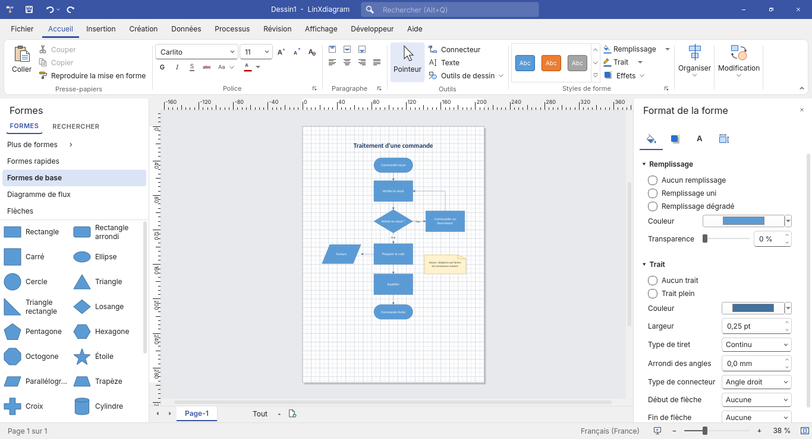
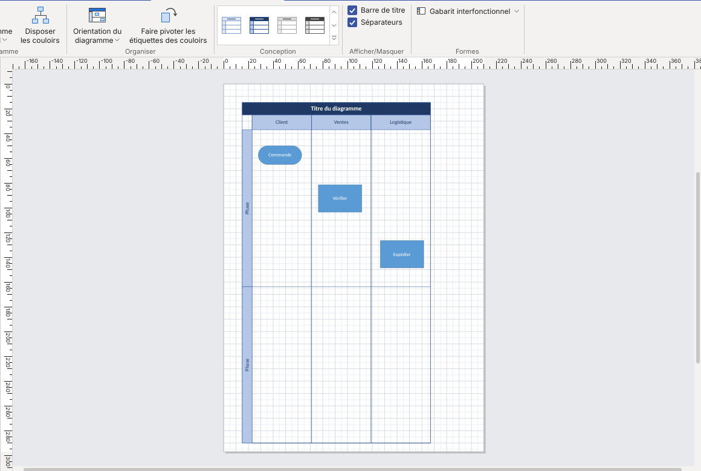
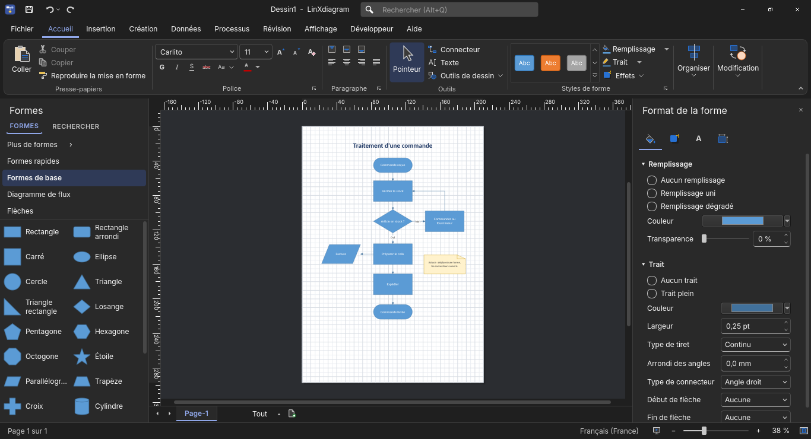

Des diagrammes professionnels,
nativement sous Linux.
LinXdiagram est un éditeur de diagrammes libre, à l'ergonomie familière pour les habitués
de Microsoft Visio, qui ouvre et enregistre les fichiers .vsdx. Sans abonnement, sans compte,
sans connexion réseau.

Fonctions
Ruban et volets familiers
Onglets Accueil, Insertion, Création, Données, Processus, Révision, Affichage ; volets Formes, Format de la forme, Données de forme ; recherche de commandes Alt+Q.
Connecteurs dynamiques
Routage à angle droit qui évite les formes, collage dynamique ou statique, sauts de ligne, AutoConnect avec formes rapides.
Gabarits de formes
Formes de base, diagrammes de flux, flèches, organigrammes, réseau, UML et diagrammes interfonctionnels (couloirs).
Couloirs (interfonctionnel)
Couloirs horizontaux ou verticaux, phases, orientation modifiable, styles ; glisser un couloir emmène ses formes.
Création à partir de données
Un fichier CSV devient un organigramme ou un diagramme de flux, avec couloirs par fonction.
Mise en forme
Thèmes et variantes, 35 styles rapides, remplissage, trait, ombre, dégradé, calques, verrouillage, commentaires.
Compatible .vsdx
Ouverture et enregistrement au format Visio : formes maîtres, géométrie, textes, données, connecteurs, calques, conteneurs.
Exports
PDF vectoriel multipage, PNG, JPEG, SVG, impression avec aperçu, mode présentation plein écran.
Diagrammes interfonctionnels
Représentez qui fait quoi dans un processus : un couloir par service, des phases, une barre de titre. Les couloirs restent accolés, se réordonnent par glisser-déposer et emportent leurs formes. L'orientation passe d'horizontale à verticale en un clic.

Sécurité et vie privée
- Aucune macro, aucun script ni formule exécutés à l'ouverture d'un document.
- Aucune connexion réseau, aucune télémétrie, aucun compte.
- Chiffrement des documents par mot de passe (AES-256-GCM, scrypt).
- Import
.vsdxprotégé contre les bombes de décompression et les attaques XML. - Vos données restent sur votre ordinateur : politique de confidentialité.

Installer
Prérequis : Python 3.11 ou plus récent et PyQt6.
# Fedora
sudo dnf install python3-pyqt6
# Debian / Ubuntu
sudo apt install python3-pyqt6 python3-pyqt6.qtsvg
git clone https://github.com/Joss943/LinXdiagram.git
cd LinXdiagram
./install.sh # ajoute LinXdiagram au menu des applicationsPour désinstaller : ./install.sh --uninstall (vos documents sont conservés).
La police libre Carlito, si elle est installée, offre les mêmes métriques que Calibri.
Licence et contributions
LinXdiagram est un logiciel libre publié sous licence MIT.
Le format .vsdx est pris en charge à partir de la spécification publique [MS-VSDX] ; aucun code,
aucune image ni aucun fichier de Microsoft n'est utilisé (composants
tiers et marques).
Bugs et idées : tickets GitHub. Failles de sécurité : signalement privé.